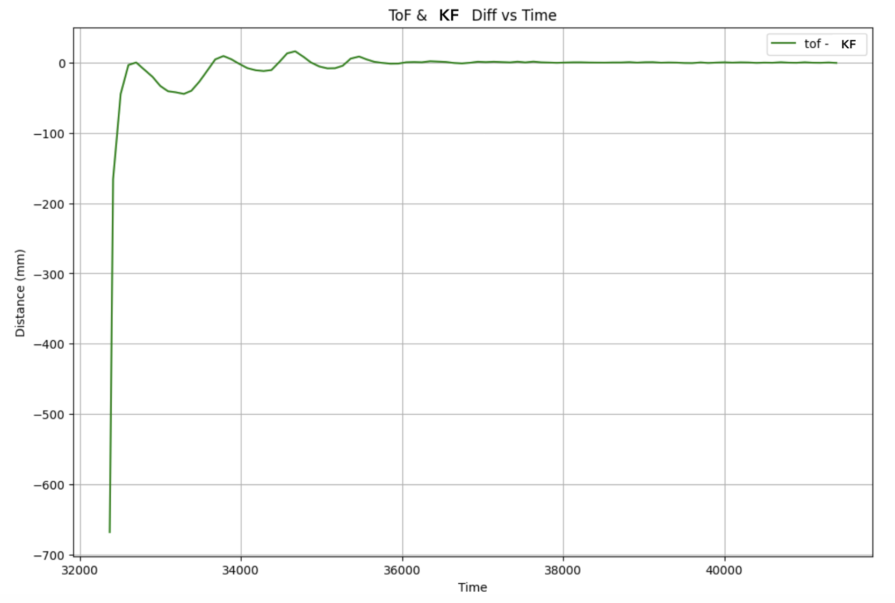

Lab 7: Kalman Filtering
03.18.2025 - 03.25.2025
In this lab, I implemented a Kalman filter algorithm to combine and optimize data from the robot's ToF sensors, which sample slowly. This improved sensor reliability enables more complex maneuvers like precision stopping, flipping, and other various stunts.
Estimating Drag and Momentum
To develop the state space model for our system, I needed to estimate the drag and momentum terms that would populate the A and B matrices. To accomplish this, I performed a step response experimentin which I drove my car towards a wall at a constant motor input speed while logging the motor input values and the ToF sensor output. This method would allow me to characterize the system's dynamic response and extract the parameters needed for modeling the car's motion.
Collecting Data
I first needed to collect data by running my car at a constant PWM while collecting ToF sensor values. To do this, I created two new commands: START_MOVE and STOP_MOVE. These cases would toggle a boolean flag that would simply drive the robot forwards. Turning the move flag on would trigger data collection and movement from the main loop, similar to how PID was implemented in Labs 5 and 6.
case START_MOVE:
{
set_up_tof();
data_i = 0;
current_pwm = 200;
move = true;
distanceSensor1.startRanging();
break;
}
case STOP_MOVE:
{
num_vars_data_collection = data_i - 1;
data_i = 0;
move = false;
drive(0, 0);
break;
}
On the python end, I had a notification handler to gather data, similar to previous labs. Using the ToF distance values, I wrote code to obtain and graph velocity values.
for i in range(len(kf_time)):
if i == 0:
kf_vel.append(0)
else:
dt = kf_time[i] - kf_time[i-1]
ddist = kf_distance[i-1] - kf_distance[i]
if (dt != 0 and ddist != 0):
kf_vel.append(float(ddist / dt))
I tested several values of PWM when running these initial tests by changing the current_pwm variable. I first started with 165, which resulting in the following ToF, PWM, and velocity graphs. I noticed a somewhat steady state around a velocity of 300 mm/s, and decided to continue testing different PWM values to see if I could reach a steady state at a faster speed.
I also tested a PWM value of 155 because I noticed that I wasn't getting many data points, but every time I ran this value, I wouldn't be able to get a steady state speed.
I finally used a PWM value of 200, as this is the max PWM value I clip my motor drivers to.
Calculating Drag and Momentum
At this control speed, I decided to use the last few points to determine my steady state speed, as they were relatively close compared to the other logged velocities. I took the average of the last three data points to get my steady state velocity, and also found the speed at 90% rise time.
When graphing the velocity at 90% rise time, I estimated the time to be around the 3rd last point. The steady state velocity, 90% velocity, and the rise time can all be seen graphed on top of the velocity graph for a PWM of 200.

I then used the steady state speed and ride time to calculate the drag and mass of the car system using the following equations.
\( d = \frac{u}{\dot{x}} \quad \text{where} \quad \dot{x} = \textit{steady state} \quad \text{and} \quad u = \textit{1 N} \)
\( m = \frac{-dt_{0.9}}{ln(0.1)} \quad \text{where} \quad dt_{0.9} = \textit{rise time} \)
Initializing KF
The next step was to determine the matrices A and B
\( A = \begin{bmatrix} 0 & 1 \\ 0 & -\frac{d}{m} \end{bmatrix} = \begin{bmatrix} 0 & 1 \\ 0 & -0.48381041 \end{bmatrix}\)
\(B = \begin{bmatrix} 1 \\ \frac{1}{m}\end{bmatrix} = \begin{bmatrix} 1 \\ 2.05221488 \end{bmatrix}\)
In order to implement a Kalman filter for discrete time readings, I discretized A and B:
Ad = np.eye(n) + dt * A Bd = dt * B
I then had to define the observation matrix C, and initalize the vector x from the first ToF distance readings from the data collection earlier.
time = np.array(kf_time) - kf_time[0] tof = kf_distance uss = 1 C = np.array([[1,0]]) x = np.array([[tof[0]], [0]])
Finally, I had to calculate the process and sensor noise covariances, which were dependent on the sampling time dt or sensor variance dx. I found my ToF sampling time to be 0.09 seconds, or 90 ms, and found my dx value to be 20 mm from the data sheet. I then used these sigma values to define the covariances and diagonal covariance matrices, Sigma_u and Sigma_z.

sigma_1 = np.sqrt(100/dt) sigma_2 = sigma_1 dx = 0.2 sigma_3 = np.sqrt(100/dx) sigma_u = np.array([[sigma_1**2, 0], [0, sigma_2**2]]) sigma_z = np.array([[sigma_3**2]])
Implementing KF in Python
Using the values found just prior, I implemented a Kalman Filter algorithm in Python.
def kalman(mu, sigma, u, y, update = True):
mu_p = Ad.dot(mu) + Bd.dot(u)
sigma_p = Ad.dot(sigma.dot(Ad.transpose())) + sigma_u
if not update:
return mu_p, sigma_p
sigma_m = C.dot(sigma_p.dot(C.transpose())) + sigma_z
kkf_gain = sigma_p.dot(C.transpose().dot(np.linalg.inv(sigma_m)))
y_m = y - C.dot(mu_p)
mu = mu_p + kkf_gain.dot(y_m)
sigma = (np.eye(2) - kkf_gain.dot(C)).dot(sigma_p)
return mu, sigma
# Uncertainty for initial state
sigma = np.array([[20**2, 0], [0, 10**2]])
kf = []
i = 0
for t in time:
# Step through discrete time
update = time[i+1] <= t
i += 1 if update else 0
# Run Kalman filter for each time step
x, sigma = kalman(x, sigma, uss, tof[i], update)
kf.append(x[0])
I then plotted the results of the Kalman filter with the ToF raw values.
The Kalman Filter model fits the ToF readings decently well, which means that the variable values that I found were good estimates. I also played around with different values of dx to test the affects of Sigma_z, which represented the mistrust in sensor readings. I tried out values of 25 mm (left) and 50 mm (right), as the datasheet also had the value of 25, and I also wanted to test a very high value.
I found that a dx value of 20 mm was good, as the Kalman filter for 25 mm and 50 mm was too close to the raw sensor readings.
Implementing KF on the Robot
After implementing the Kalman filter in Python on one set of ToF data, the next task was to implement the filter in Arduino. This way, the KF could supplement the raw ToF values, allowing the car to speed up and stop 1 ft from the wall.
My approach to this code was to closely follow my Python implementation for the Kalman filter. I first added the variables that I had found earlier:
#includeusing namespace BLA; float kf_speed; float kf_dist; float d = 0.23575036497943144; float m = 0.48727840869544864; float dt = 0.09; Matrix<2, 2> A = {0, 1, 0, -d / m}; Matrix<2, 1> B = {0, 1 / m}; Matrix<1, 2> C = {1, 0}; Matrix<2, 2> I = {1, 0, 0, 1}; Matrix<2, 2> Ad = {1, 0.09, 0, 0.95645706}; Matrix<2, 1> Bd = {0, 0.18469934}; Matrix<2, 2> sig_u = {1111.11111111, 0, 0, 1111.11111111}; Matrix<1, 1> sig_z = {500.0}; Matrix<2, 2> sigma = {400, 0, 0, 100}; Matrix<2, 1> x = {4556, 0};
I next had to integrate the Kalman filter into my Lab 5 PID code. I first wrote the Kalman filter function, which essentially did the same as the Python version I had coded up prior.
void kf(float ¤t_speed, float ¤t_dist, float measurement)
{
Matrix<2, 1> mu_p = Ad * x + Bd * current_speed;
Matrix<2, 2> sigma_p = Ad * (sigma * ~Ad) + sig_u;
Matrix<1, 1> sigma_m = C * (sigma_p * ~C) + sig_z;
Invert(sigma_m);
Matrix<2, 1> kkf_gain = sigma_p * (~C * sigma_m);
Matrix<1, 1> y_m = {measurement - (C * mu_p)(0, 0)};
x = mu_p + kkf_gain * y_m;
sigma = (I - kkf_gain * C) * sigma_p;
current_dist = x(0, 0);
current_speed = x(1, 0);
}
I changed my PID implementation in the main loop to use the estimated values instead of the raw ToF values:
kf(kf_speed, kf_distance, distance1); pwm = pid(kf_distance, target);
I had also changed my Lab 5 PID code to use Kp, Ki, and Kd, but I had to tune it further during this lab.
On the Python end, I graphed the raw and estimated values, as well as the PWM and difference between the raw and estimated values.
I noticed that the estimated values were not very far off from the raw values. The areas with the most difference were when the robot was oscillating between back and forth, and the original distance estimate at time 0. (Note: I labeled the second graph wrong and corrected it in preview, which is why the text "KF" looks strange).
The PWM values graphed above bring up some issues I had with the PID implementation. I originally noticed that my car would stop a little bit further than 1 ft, but the motor drivers would still be trying to move forwards. I came to the conclusion that this was a result of fighting the friction of the ground, and thus shifted all PWM values up by 20 in order to overcome this friction. As a result, the PWM oscillations damped to a value of 20 instead of 0.
Shown below is a video of my robot running PID with KF estimated values stopping one foot from the wall.
Notes and References
Due to the lab handout saying that we had to implement KF on the robot "if we had time", I thought it was optional until the professor posted an announcement the night before, clarifying that it was required. I didn't have sufficient time to properly tune and test the robot. As a result of the limited time and repeatedly having to charge my battery, I wasn't able to tune the Kd parameter optimally. The graphs and video show that it oscillates before reaching the goal distance, which I suspect is a result of the Kd parameter not being tuned enough and also the inconsistency of my battery.
I worked with Jennie Redrovan and Sana Chawla on this lab, discussing how to implement the Kalman Filter. I also referenced Stephen Wagner's Lab 7 Report from last year.